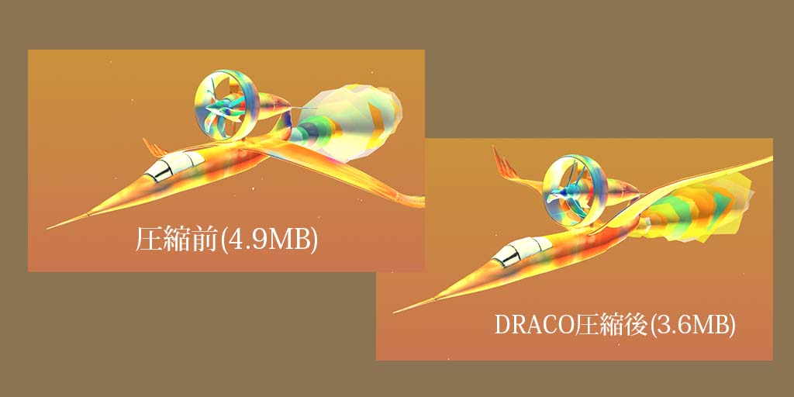

みなさんこんにちは。Takayaです。
上の3Dモデルは、Draco圧縮をかけてから表示しています。
Threejsでモデルを表示させる際に、一番気を使うのが、ファイルの大きさですよね。
今回、上の方で表示させているモデルはBlender出力時が4.9MBで、Draco圧縮をかけたモデルが3.6MBになっています。
ご覧の通り、見た目に関しては、ほとんど影響がないので安心して使えます。

nodejs経由でDraco圧縮を行う方法
Nodejsをインストールしてから初めてね!
gltf-pipelineをインストール
npm install -g gltf-pipeline
gltf-pipelineは、npm経由でダウンロードすることができるDRACO圧縮に必要なツールです。
MacOSの方は、gltf-pipelineのパスを通す必要があります。
vimから、zshrcファイルを編集します。
vim ~/.zshrc
export PATH=$HOME/~~~
zshrcに、gltf-pipelineをインストールした場所(~~~)の部分を記述してください。
gltf-pipelineでDraco圧縮を行う。
上記で、nodejsからDraco圧縮を行う準備ができたので、実際に行なっていきます。
まずは、npmの階層を圧縮したいモデルが入っているフォルダに移動してください。
そして下記のコードを打ちます。
gltf-pipeline -i [圧縮前のファイル名].gltf -o [圧縮後のファイル名].gltf -d
完了しました。これで圧縮されたモデルが出力されるはずです！
DracoLoaderを用いてWeb上で表示
GLTFLoaderと、DRACOLoaderを用いて3DModelをインポートします!
// 飛行機を出力
class ExportModel {
constructor() {
this.mesh = new THREE.Object3D();
const dracoLoader = new DRACOLoader()
dracoLoader.setDecoderPath('/draco/')
const gltfLoader = new GLTFLoader()
gltfLoader.setDRACOLoader(dracoLoader)
gltfLoader.load(
'/models/glTF-BirdPlane/BirdPlaneDraco.glb',
(gltf) => {
gltf.scene.scale.set(350, 350, 350)
this.mesh.add(gltf.scene);
mixer = new THREE.AnimationMixer(gltf.scene)
const action = mixer.clipAction(gltf.animations[0])
action.play()
}
)
}
}
OBJや、FBX経由でロードするよりはるかに使い勝手が良いのがGLTFの特徴です。 DRACO圧縮をすると、さらにWebページの読み込み速度が早まるのでぜひ試してみてください!
Youtubeに制作過程をあげています
ASMR形式で、全コードをタイピングしているので宜しければぜひ見てください!
あとがき
下のコメント投稿欄で感想を共有していただけるととても嬉しいです！！
コメント